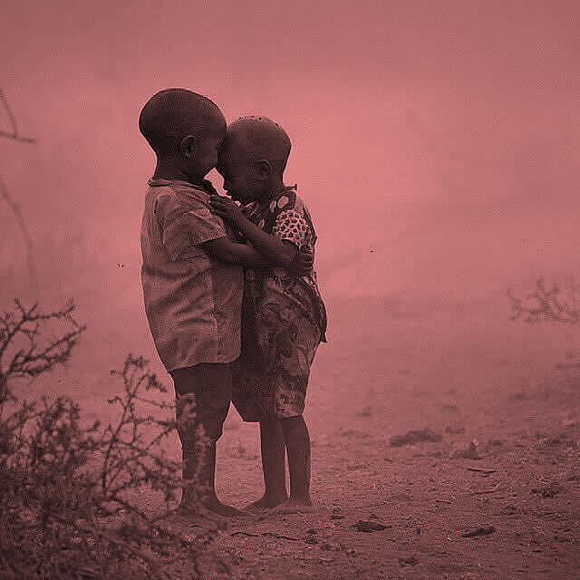

OUR PARTNERS



Joseph Tumushabe – CEO, Oversees CEREDEV Programs and operations. Demographer, former Lecturer Makerere University, Uganda. An accomplished mentor, with over-25 years of research, evaluation and development consultancy experience spanning across 20 African countries. Major interests in business Development and resource mobilization; public health program strengthening; motivation, careers and mentorship of adolescents and youth; and helping people to realize their goals. Working with government, private sector, civil society organizations and experts to provide best solutions in conducing governance terrain at all levels.
Lydia Belinda Sandi – Director, young, self-driven, ambitious, and hardworking entrepreneur, with a Degree in Marketing and a Professional Certificate in Marketing (CIM). Lydia Heads the CEREDEV Lake Zonal Centre and is Director CEREDEV Horizon primary and Nursery School. Lydia has eight-year experience in working with starter campaigns and nurturing them to enviable heights; marketing and network specialist. She won the Tony Elumelu Award 2018 for CEREDEV career development training wing.
Caritas Pesha – Team Leader Research and Consultancy Services. Caritas has over 10+ years of research experience in qualitative and quantitative research across different projects. Few people know community people with varied cultures more than Caritas does. Caritas has carried out field team leadership in all regions of Tanzania, over 80% of the districts and enriched our knowledge of the country’s multiple cultures and communities. Caritas designs project proposals, prepares research instruments, trains and supervises field teams, and carries out data analysis and report writing. She is a qualitative data collection and management specialist with unmatched skills and a technical Swahili – English bi-directional and translator and transcriber.
Glenda Tambudzai Muzenda is a social justice professional with over a decade of domestic and international experience in ASRHR, human rights, gender equality, gender analysis, and women’s rights. Her focus is on sexuality and gender rights of women, girls and young women the region. A multi-programme talented professional, she has presented at various conferences and seminars, and has published opinion and commentary pieces in publications across Southern Africa.
Julia Teboho Nzimande is a Black Economic Empowerment Advisor; and a share-holder in Mobile Accommodations Solutions a company designing, manufacturing innovative modular buildings, i.e. classrooms, clinics and houses.She is Board Member and Director on the Association of B-BBEE Professionals (ABP) in SA since September 2016 and Technical committee member at South African Institute of Professional Accountants (SAIPA). Julia worked for almost a decade at the Department of Trade and Industry, initially as Deputy Director at the Industrial Development Division, Creative Industries desk and later Deputy Director BEE Partnerships and Stakeholder Engagement at the B-BBEE Chief Directorate. Julia was part of the B-BBEE legislation, policies and strategies development team. Her passion is the develop-ment and implementation of policies and strategies for the transformation and growth of national economies; creating PPP synergies, supporting compliance; providing support to CSOs that target economic empowerment and skills building of marginalised groups towards economic and social participation.
Johannes George Mulokozi is a Monitoring and Evaluation expert. Johannes was nurtured and mentored by CEREDEV. Joining CEREDEV at the same time as he was joining college at Dodoma University, Johannes is one expert that has developed and grown with CEREDEV. In 2017 he won an Award and was seconded to Jambo Bukoba a Tanzania Non-governmental organisation based in Kagera Region, Tanzania. Here he uses the power of sports to empower the youth and children, with the vision to create a conducive and sustainable environment for children and youth to attain their dreams.
Julieth F. Mongi is a highly motivated, personable Public Relations staff for Non-Profit Organization with two years’ experience in communications industry. Always striving to be an efficient communicator with exceptional time management, problem-solving, and analytical skills, CEREDEV has sharpened my research skills as I traversed most parts of Tanzania administering research tools in countrywide and regional studies. In CEREDEV I have become an expert in surveys and participatory methodologies, in literature reviews and data analysis. Targeting a career with civil society since high school, as a Public Relations expert, CEREDEV was my match, mentoring me. Here children, adolescents, youth, adults in rural and urban communities, government servants and officials, private sector operators, international and local organization/ UN Systems agency staff present challenges whose efficiency in management is one’s source of livelihood.
Bernard Kakuhikire, Head Entrepreneurship Development Training and Coordinator, CEREDEV, Uganda is also a Senior Lecturer and former Dean of Management Sciences; Mbarara University of Science and Technology (MUST), Uganda. He is the Lead and Senior Researcher for the Health Outcomes, Progressive Entrepreneurship, and Networks (HopeNet) Project of MUST/Harvard-MGH Collaboration. His key interests include Consultancies in Baseline/Needs Evaluations and Assessments, Process and End-of project/programme reviews and impact evaluations. He has a decade of training and mentorship in Integration of social development into micro-finance project planning; Rural livelihoods, poverty and vulnerability analysis; Policy impact reviews and Local Government/ Decentralization and NGO/CBO interventions.
Stephen Mugarura, CEREDEV Head Statistician is qualified Masters of Statistics holder. The Data Management Specialist has over 15 years’ experience and survey design, monitoring, evaluation and analysis. Stephen’s field evaluation countries include Uganda, Kenya, Tanzania, Rwanda, Burundi, South Sudan, Sudan, Ethiopia, Ghana and Zambia. Interests: Agricultural and trade research, public health, education, gender studies and resettlement. He has successfully managed large cross-sectional and time-series databases. From 2010 - 2012, he handled data for the biggest Millennium Challenge Corporation (MCC) resettlement project in the world under Africare Tanzania. In 2016 to 2017, Stephen developed the EAC Integration Policy. Stephen is also an accomplished entrepreneur in education and the clothing industry with a story or two to tell.